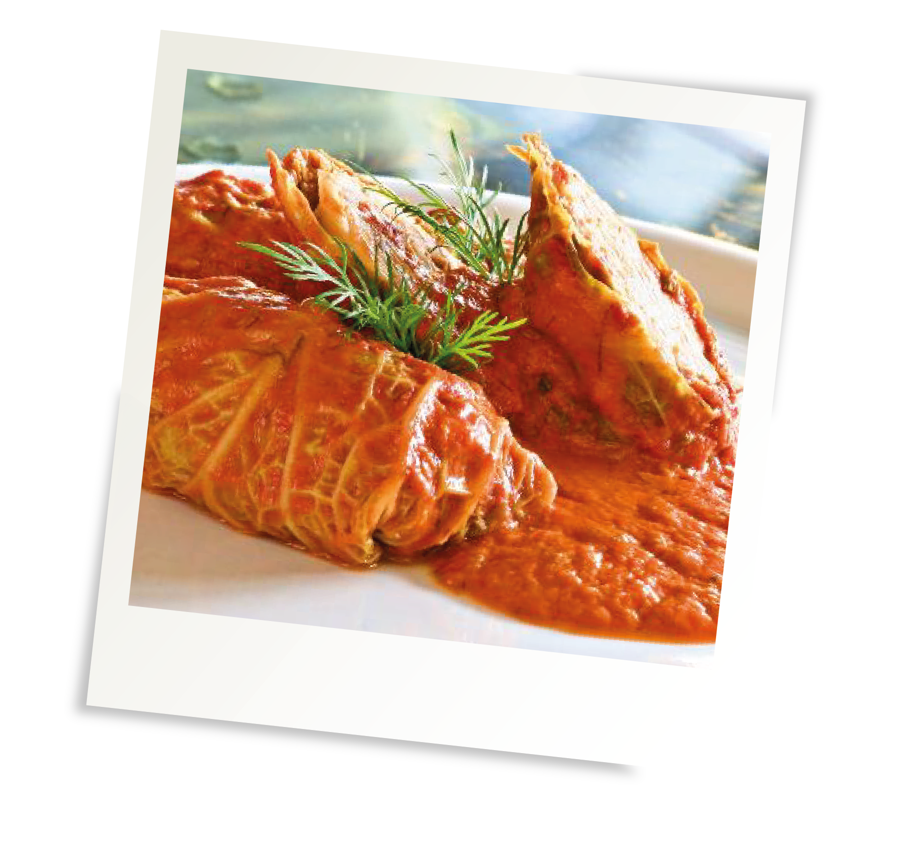

Ingrediënten :
- 1 kool
- 80 gram gekookt rijst
- 300 gram half-om-half gehakt
- 200 gram worstvlees
- 1 ei
- peper en zout
- 1 ui, kleingesneden
- 1 eetlepel kümmel (ook karwij genoemd)
- olijfolie
- 1 blik gepelde tomaat in stukjes
- 2dl bouillon (kip, kalfs- of groentenbouillon)
- glas witte wijn

Bereiding :
- Kook de rijst (eventueel meer dan deze 80 gram voor in de rolletjes – je kunt het er ook bij serveren). Laat afkoelen.
- Prepareer de koolbladeren: verwijder de buitenste bladeren van de kool als ze vies zijn en “pel” de kool verder blad voor blad, tot je er genoeg hebt. Neem er dan nog een paar extra – sommige scheuren nog open in de volgende stap; dan heb je nog wat reserve. Snijd van de overgebleven kool dunne reepjes, ongeveer twee handen vol.
- Neem een koekenpan en laat de fijngesneden ui zachtjes kleuren in wat olijfolie. Voeg dan de koolreepjes toe en bak alles een paar minuutjes lichtbruin. Laat afkoelen.
- Blancheer de hele koolbladeren in ruim kokend water met wat zout. Steeds een paar tegelijk en ongeveer 1 minuut. Zo garen ze een beetje en blijven ze mooi groen. Laat ze weer een beetje afkoelen. Snijd er dan de dikke nerf tussen uit.
- Meng het gehakt, worstvlees, ei, helft van de kümmel, 80 gram gekookte rijst en de het gebakken kool/ui-mengsel tot een stevig mengsel. Breng op smaak met peper en zout. Maar voorzichtig met het zout – het wordt nog gestoofd in bouillon.
- Leg dan steeds een blad met buitenkant naar onder. Leg er een flinke eetlepel gehaktmengsel op. Vouw dan de onderkant van het blad over het gehakt, dan ook de zijkanten erover. En tenslotte rol je het hele geval naar boven om, zodat de bovenkant helemaal egaal is en de opening van het pakketje onderligt. Als je goed vouwt heb je geen touwtje of prikkertje nodig om het bij elkaar te houden. Maar niemand houd je daar van af.
- Verwarm de oven voor op 180 graden.
- Neem een braadpan die ook ook in de oven kan, verhit er wat olijfolie erin. Bak de koolrolletjes dan zachtjes goudbruin, eerst met de opening naar beneden, daarna draai je ze voorzichtig om en braad je ook die kant even aan.
- Haal de rolletjes even uit de pan. Deglaceer de pan even met een flinke scheut witte wijn om alle aanzetsel los te krijgen op hoog vuur zodat de alcohol verdampt. Doe er dan bouillon en de gepelde tomaten bij met de overgebleven kümmel. Breng verder op smaak en laat dit een paar minuutjes doorkoken. Leg er dan de koolrolletjes in, opening weer naar beneden. Zet de hele pan met deksel ongeveer 30 minuten in de oven.